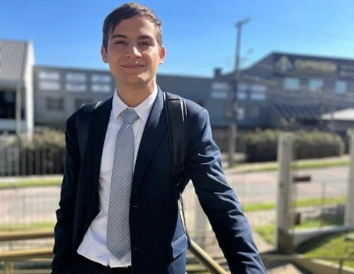

Vitório Lucas Kuroski | WDD 130

Olá! Meu nome é Vitório Lucas Kuroski e sou de Curitiba, Brasil. Estou cursando Desenvolvimento de Software (ADS) pela BYU-Pathway e pela Unicuritiba. Gosto de programação, jogos e tecnologia em geral, e estou construindo minha carreira como desenvolvedor.